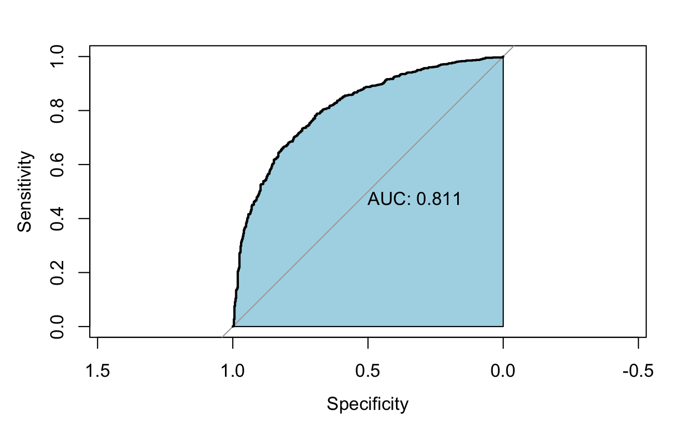
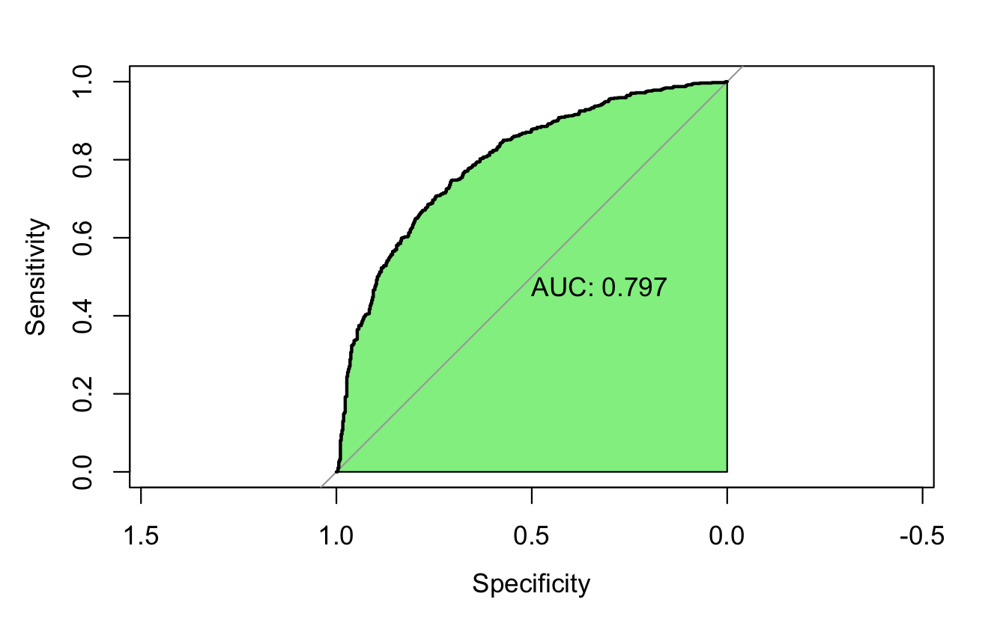

What makes a good wine? Logistic regression and the Lasso
Final project for Advanced Statistics at LUISS: identify which chemical properties drive wine quality, with models simple enough that a winemaker could act on them.
- Course
- Advanced Statistics, MSc Data Science & Management, LUISS
- Team
- Fabrizio Borrelli, Filippo Navarra, Joshua Brauner
- Date
- December 2023
- Stack
- R: glm, MASS::stepAIC, glmnet, pROC, ggcorrplot
Data and framing
The Kaggle wine quality dataset: eleven physicochemical measurements per wine (fixed and volatile acidity, citric acid, residual sugar, chlorides, free and total sulphur dioxide, density, pH, sulphates, alcohol) and a quality score. After removing missing values and duplicates, 5,427 wines remained; after percentile-based outlier removal, 4,556.
We chose classification over regression: a score of 6 or more is “good”, below 6 “bad”. Skewed variables were log-transformed, all predictors standardised, and the data split 70/30. Correlated predictors were kept because removing them did not change the results.
Models
- Logistic regression with forward stepwise selection (stepAIC from the null model), aiming for a parsimonious model. It selected a model with AIC 3270.2 against 3273.0 for the full model.
- Lasso-penalised logistic regression (glmnet), with λ chosen by cross-validation, as a second route to variable selection and protection against overfitting.
Results
| Model | Test accuracy | Sensitivity | Specificity | AUC |
|---|---|---|---|---|
| Logistic, forward selection | 74.2% | 0.759 | 0.710 | 0.811 |
| Lasso logistic | 71.8% | 0.821 | 0.585 | 0.797 |


Findings
- Alcohol is the clearest positive driver of quality and volatile acidity the clearest negative one; sulphates, residual sugar and both sulphur dioxide measures complete the selected model.
- The Lasso kept alcohol, volatile acidity and total sulphur dioxide as its most influential terms, agreeing with the stepwise model on what matters.
- Both models are better at recognising good wines than bad ones. The Lasso is more willing to call a wine good (higher sensitivity) at the cost of more bad wines slipping through (specificity 0.59).